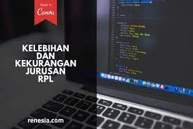

APA ITU RPL (Rekayasa perangkat Lunak) ?
RPL adalah singkatan dari Rekayasa Perangkat Lunak dan merupakan sebuah jurusan yang ada di Sekolah Menengah Kejuruan (SMK). RPL adalah sebuah jurusan yang mempelajari dan mendalami semua cara-cara pengembangan perangkat lunak termasuk pembuatan, pemeliharaan, manajemen organisasi pengembangan perangkat lunak dan manajemen kualitas.
Bukan hanya itu, RPL juga berkaitan dengan software komputer mulai dari pembuatan website, aplikasi, game dan semua yang berkaitan dengan pemrograman dengan menguasai bahasa pemrograman tersebut. Intinya RPL tidak akan jauh-jauh dari tiga hal yaitu Coding, Desain dan Algoritma yang akan menjadi kunci keberhasilan rekayasa perangkat lunak tersebut.Biasanya jurusan RPL juga mempelajari tentang Perakitan Komputer, Jaringan Dasar dan masih banyak lagi.
Kenapa selalu ada masih banyak lagi? karena jurusan RPL ini bersinggungan dengan teknologi sehingga perkembanganya mengikuti. Jadi, kesimpulannya RPL (Rekayasa Perangkat Lunak) itu tidak sekedar Membuat Program (Software) dan Membuat Web saja. RPL (Rekayasa Perangkat Lunak) Itu Luas.Peluang karir jurusan RPL bisa melingkupi, software engineer/programmer, mobile computing developer, IT Consultant, System analyst, game developer, software tester dan masih banyak lagi prospek karir lainnya.Itulah sedikit ulasan mengenai jurusan Rekayasa Perangkat Lunak, semoga bermanfaat dan jangan lupa share ke temanmu yang lainnya juga.